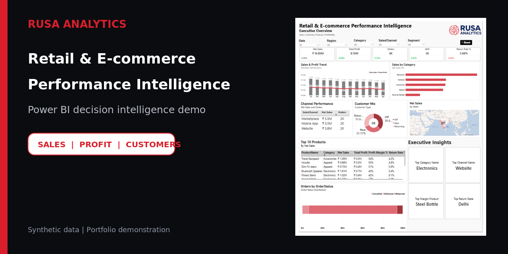
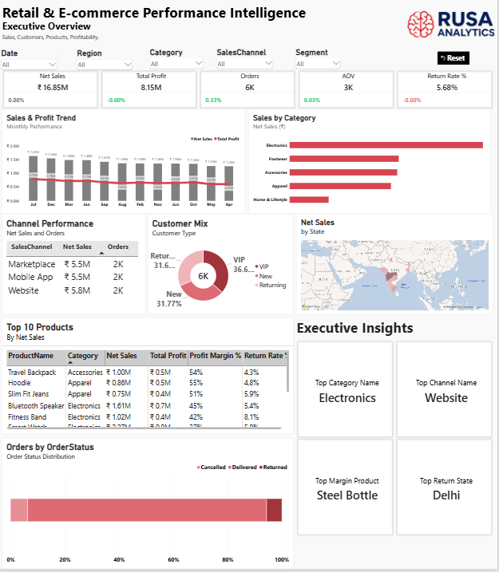

Decision Intelligence Demonstration
Retail & E-commerce Performance Intelligence
A four-view analytics demonstration designed to convert fragmented retail data into a clear operating picture across leadership KPIs, products, customers, geography and order health.

Synthetic portfolio demonstration. No live client data is displayed.
₹16.85MNet sales shown
₹8.15MTotal profit shown
6,000Orders analysed
5.68%Return rate shown
Dashboard views
One operating picture. Four decision views.
Select a view to inspect the dashboard presentation. The underlying Power BI file, model, formulas and source dataset are intentionally not distributed.

RUSA ANALYTICS DEMO
Analytical coverage
Built around decisions, not decorative charts.
Executive performance
Sales, profit, orders, returns, monthly movement and category contribution.
Product and channel
Product comparisons, channel mix, device behaviour and discount analysis.
Customer intelligence
Customer segments, repeat behaviour, acquisition mix and value analysis.
Order health
Geography, payment behaviour, delivery status and return monitoring.
Portfolio disclosure: This demonstration uses synthetic data and is not presented as a live client implementation. No client deployment, cost saving, revenue uplift or operational outcome is claimed. The Power BI source file, DAX measures and dataset remain proprietary to RUSA Analytics.